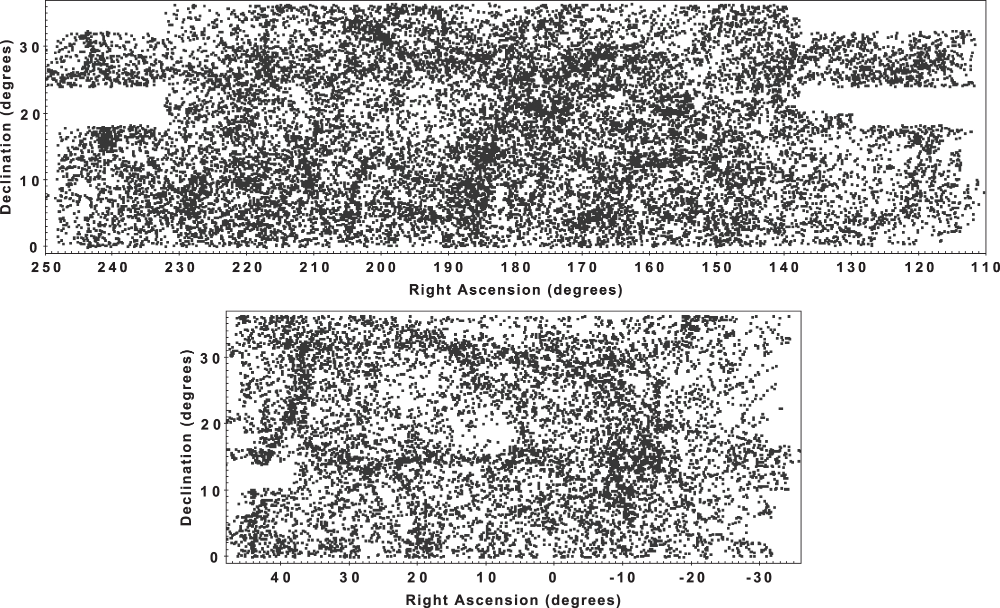

The Arecibo Legacy Fast ALFA (ALFALFA) Survey was a wide-field blind 21 cm neutral hydrogen survey.
This website is dedicated to preserving the legacy of the ALFALFA survey through both its scientific and educational products.
Using ALFALFA
The ALFALFA Survey produced a rich set of data products as described at the links below. Users are strongly advised to consult the caveats before using the data.
Data Products & Documentation
Catalogs, grids, spectra, and other data products.
Survey Design & Caveats
Design, caveats, and recommendations for future surveys.
Acknowledgements
How to cite and acknowledge ALFALFA.
Learning about ALFALFA
The ALFALFA Survey transformed our understanding of extragalactic HI in the local universe. The links below summarize the scientific and educational legacy of ALFALFA.
Key Science Results
Major scientific results from the ALFALFA survey.
Undergraduate Education
Student research, training materials, and educational programs.
Archives
Original ALFALFA web pages and long-term archival materials.
Major Scientific Achievements of the ALFALFA HI Survey
The Arecibo Legacy Fast ALFA (ALFALFA) survey was, in it's time, the largest 21 cm neutral hydrogen (HI) survey of the local Universe. Using the 305 m Arecibo radio telescope and its seven-beam L-Band Feed Array (ALFA), it carried out a blind survey of HI emission over approximately 7,000 square degrees of sky out to redshift z ≈ 0.06, detecting the 21 cm line from gas in galaxies without pre-selecting targets. This produced a rich dataset used in studies of galaxy evolution, cosmology, and the gaseous content of galaxies in the nearby Universe.
The survey required over 4,400 hours of telescope time and resulted in more than 100 peer-reviewed papers and 20 PhD theses.
The full list of ALFALFA team publications can be found here: SciX Public Library of ALFALFA Team Publications
A shorter selection of papers covering the survey design and main data products can be found here: SciX Public Library of References about ALFALFA Survey Design and Catalogs
A few of the survey's key findings are discussed below.
1. First Comprehensive Census of HI-Bearing Galaxies
ALFALFA detected HI emission in more than 31,000 galaxies, making it the largest blind HI survey of its kind in the local Universe (at the time of its completion). The survey provided the first comprehensive census of gas-rich galaxies out to roughly 800 million light-years (250 Mpc), over about one-sixth of the sky. Its large volume enabled meaningful sampling of cosmic structure across a cosmologically significant region of space.
2. HI Mass Function and Cosmic Gas Density
One of ALFALFA’s flagship scientific results was a precise measurement of the HI Mass Function (HIMF), the abundance of galaxies as a function of their neutral hydrogen mass. Integrating this function yielded an improved estimate of the cosmic HI mass density (ΩHI), a key anchor point for models of galaxy formation and evolution. The complementary velocity width function also highlighted the tensions between observed galaxy population and predictions from cold dark matter cosmology, particularly at low masses.
3. Discovery of Unusual and Exotic HI-Rich Systems
ALFALFA revealed rare and unexpected types of galaxies often missed in optical surveys because of their faint stellar components. These include gas-rich dwarf galaxies, very low surface brightness systems, and HI-bearing ultra-diffuse galaxies (HUDs) with large gas reservoirs but little stellar mass. The survey also identified extremely low-metallicity systems such as Leo P, providing insight into chemically primitive galaxy environments.
4. Search for “Dark” Galaxies
A major motivation of ALFALFA was the search for gas-rich systems with few or no stars—so-called dark galaxies. While no purely starless galaxies were confirmed, the survey identified candidate systems with much more gas than stars, raising important questions about star formation inefficiency and the properties of low-mass dark matter halos.
5. Galaxy Evolution and Gas Scaling Relations
By combining ALFALFA HI data with optical and ultraviolet surveys such as SDSS and GALEX, astronomers established detailed scaling relations linking HI mass with stellar mass, star formation rate, and galaxy color. The survey also provided important constraints on the baryonic Tully–Fisher relation, which connects galaxy rotation dynamics to total baryonic mass, highlighting the fundamental role of gas in regulating star formation.
6. Cosmological and Large-Scale Structure Insights
The large volume spanned by ALFALFA enabled the measurement of the correlation function of gas-rich galaxies, a measure of how galaxies cluster in space. This demonstrated that blue, gas-rich galaxies are much less clustered than the overall galaxy population, avoiding red galaxies on average, and favoring low-density environments instead.
7. Gas and Dark Matter Halo Connection
Through spectral line stacking, a technique that combines the spectra of many galaxies based on prior known positions and redshifts (from optical surveys), ALFALFA studied the gas content of elliptical galaxies and galaxies hosting active galactic nuclei, which often have too little gas to be detected individually. Analyses of the stacked spectra of galaxy groups and satellites also produced a direct measurement of the HI mass--dark matter halo mass relation, a key constraint for galaxy formation models.
8. Legacy Data and Community Impact
ALFALFA became a cornerstone dataset in extragalactic astronomy. Its publicly released catalogs and spectra are widely used as benchmarks for next-generation HI surveys conducted with facilities such as ASKAP, MeerKAT, and the forthcoming Square Kilometre Array (SKA). The survey led to over a hundred scientific publications, numerous graduate theses, and introduced hundreds of undergraduate students to research in astronomy through the Undergraduate ALFALFA Team (UAT) program.
Further Reading
- Final ALFALFA catalog release summary: Cornell Chronicle – Decade-Long Galaxy Survey Releases Final Catalog
Survey Design and Caveats
This section contains important caveats about using ALFALFA data, and more detail about the survey and its design. Full details are given on the caveats and survey design pages.
ALFALFA was a blind 21 cm HI spectral-line survey carried out with the Arecibo telescope between 2005 and 2012, using nearly 5000 hours of time and a two-pass drift-scan technique with the seven-horn ALFA receiver. It mapped roughly 7000 square degrees of high-Galactic-latitude sky (about a fifth of the sky) over a 1335–1435 MHz bandpass, reaching recessional velocities up to ~18,000 km/s (D ~ 250 Mpc) at ~4 arcmin resolution and 2–4 mJy/beam sensitivity.

Important Caveats for Using ALFALFA Data:
The beam is big
The ALFA beam was large (~3.3′ × 3.8′) with significant side lobes, so nearby sources at similar velocities can blend into a detection and extended sources are hard to extract cleanly. Positions are still reliable for high signal-to-noise detections, and published manually assigned optical-counterpart coordinates are recommended for most uses.
Bandwidth matters
ALFALFA only covered 1335–1435 MHz, so it cannot detect HI beyond ~18,000 km/s (~260 Mpc), and radio frequency interference removes parts of that range. Velocities above 15,000 km/s are strongly affected and should not be used for statistical studies.
Completeness and statistics
Completeness depends on both a source's integrated flux and its velocity width, so narrow-profile (e.g. face-on) galaxies are easier to detect than broad-profile ones. For statistical work, use only the high-S/N Code 1 sources and their completeness limit, not the redshift-confirmed Code 2s.
Velocity widths
The catalog's W50 velocity widths are robust and corrected for instrumental broadening, but carry no inclination correction and are limited by the ~10–11 km/s spectral resolution. Converting them to other kinematic measures such as flat rotation speed requires care and external calibrations.
A survey of two halves
ALFALFA covers two very different regions: the Virgo-dominated “spring” sky and the “fall” sky containing the Local Void. They also had unequal optical redshift coverage, so some low-S/N sources catalogued in the spring sky would have been excluded in the fall sky.
Archives
You can find links to all ALFALFA data products, descriptions, and code in the ALFALFA Legacy github repository here.
The original main ALFALFA webpage can be found here.
The main page hosted at naic can be found here
Select scientific files on hosted on caborojo will also be made available in the future.
Large files, archived papers and presentations/ etc. can be found in the ALFALFA google drive, or linked from specific pages below.
How to Cite ALFALFA
ALFALFA observations were obtained from 2005–2012 with the Arecibo Observatory, which operated from 1963 until its untimely collapse in 2020. At the time the data were taken, the Arecibo Observatory was part of the National Astronomy and Ionosphere Center (NAIC), operated by Cornell University under a cooperative agreement with the National Science Foundation (NSF).
These data products are the work of the entire ALFALFA collaboration, including generations of students from the Undergraduate ALFALFA Team. Their research was supported by grants from a variety of agencies, including the NSF and the Brinson Foundation.
The ALFALFA team is indebted to — and mourns the loss of — Riccardo Giovanelli, who was an inspiration to us all.
Required Citations
Publications using ALFALFA data should cite Giovanelli et al. (2005) and Haynes et al. (2018).
Acknowledgement Text
“ALFALFA observations were obtained with the Arecibo Observatory. At the time the data were taken, the Arecibo Observatory was part of the National Astronomy and Ionosphere Center (NAIC), operated by Cornell University under a cooperative agreement with the National Science Foundation (NSF). These data products are the work of the entire ALFALFA collaboration who have contributed to the many aspects of the survey over the years. Their research was supported by grants from a variety of agencies, including the NSF and the Brinson Foundation.”